<!-- Toolbar -->
<div class="toolbar justify-content-between" role="banner">
  <div>

    
    <span>BANAH</span>
  </div>

  <div class="home-button">
    <button class="btnHome" routerLink="./">
      

    </button>
  </div>
</div>


  <router-outlet></router-outlet>

<div class="footer" role="banner">
 <div class="footer-author">
    <div class="row">
      <div class="col-4 text-center paddingMobile">
        <h5>Frontend</h5>
        <div class="fontMobile">Marta Jamróz Kulig</div>
        <div class="fontMobile">Sebastian Pociask</div>

      </div>
      <div class="col-4 text-center paddingMobile">
        <h5>Backend</h5>
        <div class="fontMobile">Michał Motyka</div>
        <div class="fontMobile">Gabriel Pazdan</div>
      </div>
      <div class="col-4 text-center paddingMobile">
        <h5>UI Design</h5>
        <div class="fontMobile">Sebastian Florczak</div>
      </div>
    </div>
 </div>
</div>
